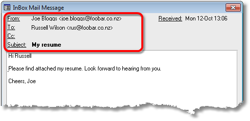
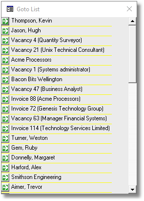
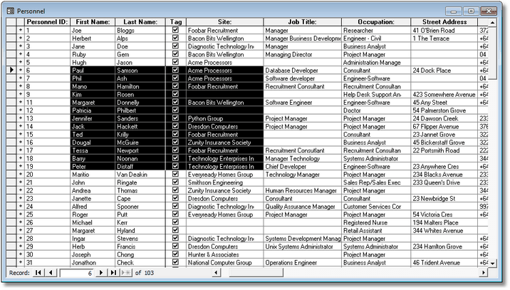

|
|
PRS News & Tips | February 2017 |
|
Note
|
If your Windows 10 PC has been updated with Microsoft’s recent Windows 10 Anniversary update you may experience the following PRS startup error: couldn’t find file 'system.mdw'. To resolve the issue reinstall the PRS Runtime. See Reinstalling the PRS Runtime on the PRS website for step-by-step instructions. |
We’ve just released PRS 8.2.1. To download and install this recommended upgrade go to the Installing/Upgrading the Latest PRS Client section on our Updates web page and follow the instructions.
What’s New in PRS 8.2.1
Highlights include:
-
The InBox Tool From, To and Cc fields are no longer limited to a maximum length of one hundred characters; the Subject field is no longer limited to two hundred characters.
-
Notes edits and deletions are now logged.
There are also a number of minor improvements and bug fixes.
For a full list of the changes since the previous release see the PRS Changelog web page.
Tips and Tricks
Goto List
The Goto List is probably the most used PRS navigation tool. It contains a list of your most recently visited records (Personnel, Sites, Vacancies, Invoices, Timesheets, Mail messages). The most recently visited records are at the top of the list.

-
Press the F5 key to open the Goto List.
-
Click on a list item to view the corresponding record. The Goto List is updated whenever you go to a record via a Goto button or a form Goto command.
The Goto List opens automatically when you logon (this can be disabled by unticking the Show Goto List at logon option on the Appearance tab of the Options dialog).
Datasheet View
Personnel, Vacancies, Sites and Invoices forms can be switched from the default single-record view to the spreadsheet-like Datasheet View using the Window→Toggle Form View menu command (shortcut key Ctr+Shift+F).

-
Switch to Datasheet View to view multiple records (typically you would first use the form Find command to select records of interest before switching to Datasheet View).
-
Fields can be edited in Datasheet View.
-
You can use the mouse to select blocks of cells in Datasheet View then copy (Ctrl+C) and paste them (Ctrl+P) to an Excel spreadsheet.
Upgrading the PRS Client
Do not uninstall the existing PRS Client before upgrading to a new PRS version. If you do, most of your PRS custom settings (including the location of the shared database) will be lost.
Newsletter back issues
See our Newsletter Archive for more or PRS Tips & Tricks.
Need help?
Our Support web page explains how to get answers to PRS questions and includes links to articles on Maintaining Database Reliability and Performance and PRS Best Practice Deployment.
|
Important
|
If you no longer wish to receive this newsletter please email support@prshq.com with the word UNSUBSCRIBE in the subject line. |